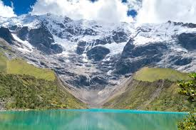

Logística
Latam & Sky Airline
Bagagem
1 Mala (12kg) + 1 Mochila (10kg)
Bases
Miraflores & San Blas

Chegada & Miraflores
Roteiro: Check-in no Airbnb. Caminhada pelo Malecón e almoço.
Look do Dia: Urban Casual
Maria: Calça jeans/sarja confortável, t-shirt básica, jaqueta leve (couro/jeans) e tênis casual.
Victor: Calça jeans/chino, camiseta, jaqueta leve e tênis confortável.

Huacachina & Paracas
Roteiro: Bate-volta intenso. Passeio de buggy nas dunas e barco nas Islas Ballestas.
Look do Dia: Aventura no Deserto
Maria: Legging/shorts esportivo, top/camiseta, corta-vento (venta muito no barco em Paracas), tênis, óculos de sol e boné.
Victor: Bermuda/calça leve, camiseta, corta-vento, tênis esportivo, óculos e boné.
Na Mochilinha:
Protetor solar (fator alto), garrafa de água, protetor labial, power bank, lenços umedecidos e lanches rápidos.

Centro Histórico de Lima
Roteiro: Plaza Mayor, Catedral, Catacumbas e jantar especial.
Look do Dia: Smart Casual (Dia p/ Noite)
Maria: Vestido midi com jaqueta ou calça de alfaiataria com tricot leve. Calçado confortável para andar nas pedras do centro.
Victor: Calça escura, camisa/polo, suéter leve e sapato/tênis arrumado.

Bairro Barranco
Roteiro: Explorar a arte de rua, Puente de los Suspiros e almoço.
Look do Dia: Boho/Street
Ambos: Roupas estilosas e confortáveis para fotos. Cores sólidas contrastam bem com os murais coloridos. Óculos de sol essenciais.

Voo p/ Cusco & Aclimatação
Roteiro: Chegada 11:30. Zero esforço. Chá de coca e almoço leve no Pachapapa.
Look do Dia: Aerolook Conforto
Ambos: Moletom ou conjunto confortável, tênis fácil de tirar, jaqueta à mão (Cusco é frio logo que desembarca).

Vale Sagrado dos Incas
Roteiro: Fechar tour lá. Pisac, Ollantaytambo, Chinchero, Maras e Moray.
Look do Dia: Outdoor Casual
Ambos: Calça confortável para subir degraus de pedra, camiseta, casaco quente e bota/tênis de trilha. Gorro ou chapéu.
Na Mochilinha:
Boleto Turístico (obrigatório para Moray), além de dinheiro trocado em Soles (necessário para feirinhas de artesanato em Pisac/Chinchero e também para a entrada das Salinas de Maras, que é paga à parte). Leve ainda garrafa de água, lanches leves, protetor labial (por conta do vento seco nas ruínas), óculos de sol e bastante hidratação ao longo do passeio.

O Grande Dia: Machu Picchu
Logística: Madrugada fria, manhã amena e tarde quente na selva alta.
Look do Dia: Trekking Tático (A Cebola)
Camada 1: Camiseta Dry-fit ou algodão leve.
Camada 2: Fleece/Moletom quente (para a fila do ônibus às 3h da manhã).
Camada 3: Corta-vento impermeável.
Parte de baixo: Calça legging grossa (Maria) / Calça cargo/trekking (Victor).
Pés: Bota de trekking amaciada ou tênis com ótima aderência. Meia de cano médio.
Na Mochilinha:
Passaportes, ingressos impressos (Google Drive!), garrafa d'água (não descartável), repelente, protetor solar, capa de chuva de plástico.

Compras & Centro
Roteiro: Centro Artesanal e Plaza de Armas.
Look do Dia: Sistema de Camadas Leve
Ambos: Calça confortável, camiseta base, blusa de fleece/suéter por cima. Tira-e-põe conforme o sol de Cusco aparece ou some.

Laguna Humantay
Roteiro: Trilhas íngremes a 4.200m. Saída de madrugada (aprox. 4h da manhã).
Look do Dia: Trekking Performance
Ambos: Segunda pele térmica, calça de trilha/legging grossa, fleece e jaqueta robusta. Bota de trekking obrigatória para o terreno instável.
Na Mochilinha:
Folhas de coca (essencial!), oxigênio em spray (opcional), protetor solar, óculos de sol, bastão de caminhada (ajuda muito) e água.

Montanha Colorida (Vinicunca)
Roteiro: Trekking extremo a 5.200m de altitude. Frio intenso pela manhã.
Look do Dia: Frio Extremo / Alta Montanha
Ambos: Segunda pele térmica OBRIGATÓRIA. Fleece grosso. Jaqueta robusta/corta-vento pesada. Gorro de lã, luvas térmicas e meias grossas. Bota de trekking.
Na Mochilinha:
Folhas ou balas de coca, água, papel higiênico (banheiros bem rústicos no trajeto), óculos de sol (o reflexo do gelo/sol cega na altitude), e Soles em espécie (caso precisem alugar os cavalos para a subida final).

Despedida
Logística: Voo às 14:05. Sair do Airbnb às 11:30.
Look do Dia: Estratégia de Peso
Ambos: Vistam as botas mais pesadas e levem o casaco mais pesado na mão para poupar peso na mala de 12kg.
Checklist: Mala 12kg (A Porão/Bordo)
Foco em tecidos que não amassam, não pesam (como fleece em vez de lã grossa) e cores que combinam entre si (cápsula).
- Parte de Baixo: 1 Calça jeans/sarja, 2 Calças de trekking/leggings grossas, 1 Bermuda/shorts (para Huacachina).
- Parte de Cima: 5 Camisetas/T-shirts, 1 Blusa térmica (Segunda Pele), 1 Fleece/Suéter, 1 Roupa mais arrumada para jantares em Lima.
- Íntimas: Roupas íntimas e meias para 10 dias (incluir 2 pares de meias de trekking mais grossas).
- Higiene: Frascos de até 100ml se a mala for na cabine (shampoo, cremes, protetor solar).
Checklist: Mochila 10kg (A de Ataque/Cabine)
Esta será a mochila que os acompanhará nos voos e nos passeios intensos.
- No Voo: Eletrônicos (notebook, carregadores, powerbank), documentos, necessaire pequena com remédios, 1 muda de roupa de emergência (caso a mala maior atrase).
- Nos Passeios (Ataque): Esvazie a mochila no Airbnb. Leve apenas: Água, snacks, corta-vento, protetor solar, labial, óculos, dinheiro em espécie (Soles), papel higiênico e álcool em gel.
Itens de Farmacia
Itens essencias para não passar sufoco na viagem.
- Dor e Febre: Paracetamol ou Ibuprofeno.
- Alergia: Loratadina.
- Enjoo: Dramin.
- Diarreia: Enterogermina.
- Azia: Omeprazol.
- Gases: Luftal.
- Garganta irritada: Pastilha.
- Machucados: Band-aids.
- Assaduras: Pomadas.
- Mosquitos: Repelente.
Extrato Consolidado (Realidade)
Victor
R$ 0,00
Maria
R$ 0,00
Custo Total
R$ 0,00
| Descrição / Item | Victor (R$) | Maria (R$) | Subtotal (R$) |
|---|
Estratégia de Bolso (Orçamento: ~3.080 Soles)
Cartão Nubank Global (~65%)
~2.000 PEN
Uso: Pagar a Agência Chullos, Ônibus Consettur, Restaurantes e Ubers.Dinheiro Físico (~35%)
~1.080 PEN
Uso estrito: Boleto Turístico, Entradas dos Parques, Cavalos e Artesanato.Raio-X de Custos Logísticos (Casal)
* Lembrete: O limite para comer bem sem estourar os R$ 4.400 é gastar cerca de 155 Soles por dia com alimentação.
| Item Fixo | Destino | Est. (PEN / USD) | Forma de Pagto |
|---|---|---|---|
| Agência (4 Tours) | Valle, Laguna, Montanha e Huacachina | R$ 1452 | Nubank (GetYourGuide) |
| Boleto Turístico | Vale Sagrado | 140 PEN | Espécie (Obrigatório) |
| Entradas Avulsas | Maras, Humantay, Vinicunca | 130 PEN | Espécie (Obrigatório) |
| Aluguel de Cavalos | Humantay e Montanha | 360 PEN | Espécie (Obrigatório) |
| Ônibus Consettur | Águas Calientes -> Machu Picchu | US$ 48 | Nubank (Global) |
Raio-X Obrigatório dos Passeios:
• Boleto Turístico: 130 PEN por pessoa. Paga-se em espécie na porta do primeiro passeio. Ele será usado no Vale Sagrado e em Moray.
• Salinas de Maras: 20 PEN por pessoa. Paga-se em espécie na porta. (Não está incluso no Boleto Turístico).
• Resgate/Cavalo (Dia 19): Opcional, mas se sentirem o peso da altitude, a subida final a cavalo custa cerca de 90 PEN por pessoa (Apenas espécie).
• Ônibus Consettur (Dia 17): O ônibus de Águas Calientes até a porta de Machu Picchu custa US$ 24 por pessoa (ida e volta) e pode ser pago com cartão.